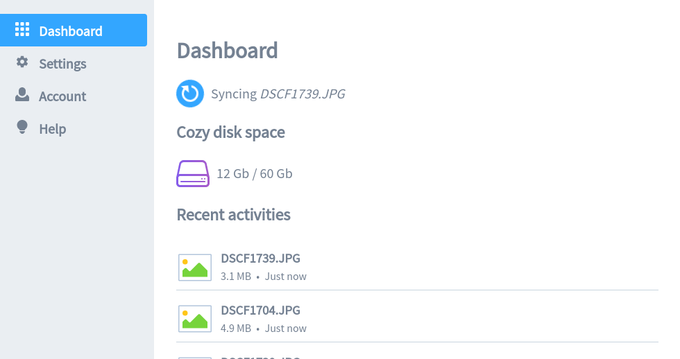

Sync your desktop computer with your server¶
Cozy Drive for desktop allows you to synchronize your files and folders between your Cozy and your desktop. Thus, you can work on your files offline. Your modifications will be synchronized as soon as network will be available.
Installation¶
Before installing Cozy Drive, make sure your Cozy should be up-to-date.
Windows¶
You can download Cozy Drive for Windows on this page.
List of known to work versions
MacOS¶
You can download Cozy Drive for macOS on this page.
List of known to work versions
Linux¶
Learn how to download and use the GNU/linux client on this page.
Configuration¶
At the end of the installation, application will start and ask you for a few informations:
- Your Cozy URL. In other words, the address used to access to your Cozy.
- Your Cozy password. We don’t save your password, we only use it to create a new device login which it uses to synchronize your files.
- The folder where you want to synchronize your files.

Once done, you will be redirected to the dashboard. First synchronization can now start.
The dashboard is composed of :
- An information panel about synchronizations and available disk space on your Cozy.
- A settings panel to configure autostart.
- An account panel with information on your Cozy and possibility to unlink your Cozy.
- A help panel in case of problem

Troubleshooting¶
When you hit a problem with the application, you can send us a message with the application logs, so we can try to understand and fix the problem.
Open help panel, then click on Send us a message in Official support.

Don’t forget to describe your problem by adding as many details as you can.